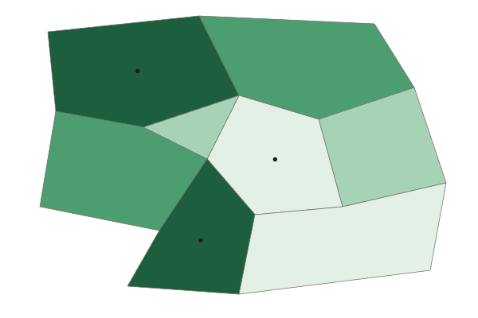

Aging Populations
An aging population comes from fewer births and longer lives.
Part 1 · Hook
Why this matters
Part 2 · Before you start
What this builds on
Part 3 · Prerequisite check
Quick check before you start
1. What does life expectancy measure?
- How many years a newborn can expect to live
- Births per 1,000 people
- Deaths of babies per 1,000 births
- Children per woman
Show the answer
Life expectancy is the average years a newborn can expect to live.
- Correct: How many years a newborn can expect to live:
- Births per 1,000 people:
- Deaths of babies per 1,000 births:
- Children per woman:
2. A pyramid’s base is narrower than its middle. What shape is it?
- Constrictive
- Expansive
- Stationary
- Upside-down
Show the answer
A base narrower than the middle is constrictive: births have fallen.
- Correct: Constrictive:
- Expansive:
- Stationary:
- Upside-down:
Part 4 · See it
See it first

Part 5 · Step by step
How it works, step by step
- Birth rates fall and people live longerolder people become a larger share of the population
- Fewer young people enter the workforcesome jobs go unfilled, so firms use machines or hire workers from abroad
- More people retire while fewer workthe elderly dependency ratio rises and pensions cost each worker more
- Pensions and health care cost moregovernments raise the retirement age, raise taxes or cut benefits, and voters argue
Part 6 · Key ideas
Key ideas
- An aging population has a rising share of older people. It comes from low birth rates and longer life expectancy, and young people moving away can make one place older still.
- The dependency ratio = (people under 15 + people 65 and over) ÷ people 15 to 64 × 100. Split it into youth and elderly ratios to see who the dependents are.
- Effects are economic (worker shortages, pension and health costs), political (pension debates, older voters) and social (family care, empty schools).
- Scale matters: rural provinces often age faster than the capital because young adults move to cities.
Part 7 · Misconception
A common mistake
The wrong idea: A high dependency ratio means a country has many older people.
What actually happens: The ratio counts children too. A country with many children can have the same ratio as one with many older people. Split it into youth and elderly ratios.
Part 8 · Check yourself
Check yourself
Exam-style questions. Anything you miss goes into your review queue.
Map
People aged 65 and over in the provinces of Country A

People aged 65 and over (percent of the province, invented data)
- Under 12%
- 12% to 17%
- 18% to 23%
- 24% or more
1. At what scale of analysis are the data on this map?
- Local (subnational): one value for each province
- National: one value for the whole of Country A
- Global: one value for each country in the world
- Regional: one value for a group of several countries
Show the answer
The scale of analysis is the scale of the data. One value per province is local (subnational), even though the map shows the whole country.
- Correct: Local (subnational): one value for each province: Right: the data describe parts of one country.
- National: one value for the whole of Country A: the map shows eight values, one for each province, not one for the country.
- Global: one value for each country in the world: only one country appears on the map.
- Regional: one value for a group of several countries: the map has one country, divided into provinces.
2. Which statement describes the pattern on the map?
- The share of older people is highest in the Capital Region and lowest in the hills
- Highest in the Northern Hills and Southern Forest; lowest in the Capital Region and South Coast
- The share of older people is about the same across the eight provinces
- Older people make up most of the population of the South Coast
Show the answer
A pattern names where values are high and low: 24% or more in the Northern Hills and Southern Forest, under 12% in the Capital Region and on the South Coast.
- The share of older people is highest in the Capital Region and lowest in the hills: this reverses the map: the Capital Region is in the lowest class.
- Correct: Highest in the Northern Hills and Southern Forest; lowest in the Capital Region and South Coast: Right: the Northern Hills and Southern Forest are 24% or more.
- The share of older people is about the same across the eight provinces: the provinces fall into four different classes.
- Older people make up most of the population of the South Coast: the South Coast is in the lowest class, under 12%.
3. Which process best explains why the Northern Hills have a higher share of older people than the Capital Region?
- Older people move from the capital to the hills in larger numbers than young people do
- Birth rates are higher in the Northern Hills than in the capital
- Young adults leave rural provinces for jobs in the capital
- People in the Capital Region live longer than people in the hills
Show the answer
Migration changes age structure. When young adults move to cities for work, rural provinces lose young people and their children, so the share of older people rises there.
- Older people move from the capital to the hills in larger numbers than young people do: the main flow in most countries is of young adults toward cities.
- Birth rates are higher in the Northern Hills than in the capital: higher births would make a province younger, not older.
- Correct: Young adults leave rural provinces for jobs in the capital: Right: when young people move out, the people who stay are older on average.
- People in the Capital Region live longer than people in the hills: longer lives in the capital would make it older, not younger.
Data
Population by age group in three countries
| Country | Under 15 | 15 to 64 | 65 and over |
|---|---|---|---|
| Country F | 12 | 20 | 2 |
| Country G | 6 | 30 | 12 |
| Country H | 4 | 16 | 8 |
Invented data for practice.
4. Use the table. What is Country F’s dependency ratio (dependents per 100 people aged 15 to 64)?
Type a number. No calculator needed: work it out by hand, as on the exam.
Show the answer
Dependency ratio = (under 15 + 65 and over) ÷ (15 to 64) × 100 = (12 + 2) ÷ 20 × 100 = 70.
- Answer: 70
5. Use the table. What is Country G’s elderly dependency ratio (people 65 and over per 100 people aged 15 to 64)?
Type a number. No calculator needed: work it out by hand, as on the exam.
Show the answer
Elderly dependency ratio = 65 and over ÷ (15 to 64) × 100 = 12 ÷ 30 × 100 = 40.
- Answer: 40
6. Countries F and H have similar total dependency ratios (70 and 75). Which statement compares their situations correctly?
- Both countries mainly need more schools, because their dependents are children
- F needs more pensions than H, because its total ratio is lower
- F’s dependents are mostly children, while H’s are often older people
- The two countries face the same problems, because their ratios are close
Show the answer
A compare speaks of both sides. F’s dependency comes from children (youth ratio 60), so it needs schools; H’s comes largely from older people (elderly ratio 50), so it needs pensions and health care.
- Both countries mainly need more schools, because their dependents are children: H has twice as many people over 65 as children under 15.
- F needs more pensions than H, because its total ratio is lower: pensions depend on older people, and H has a far larger share.
- Correct: F’s dependents are mostly children, while H’s are often older people: Right: F has 12 million children and 2 million older people; H has 4 million and 8 million.
- The two countries face the same problems, because their ratios are close: a similar total can hide very different age groups.
Part 9 · Summary
Summary
Part 10 · Up next
What comes next
Part 11 · Connections